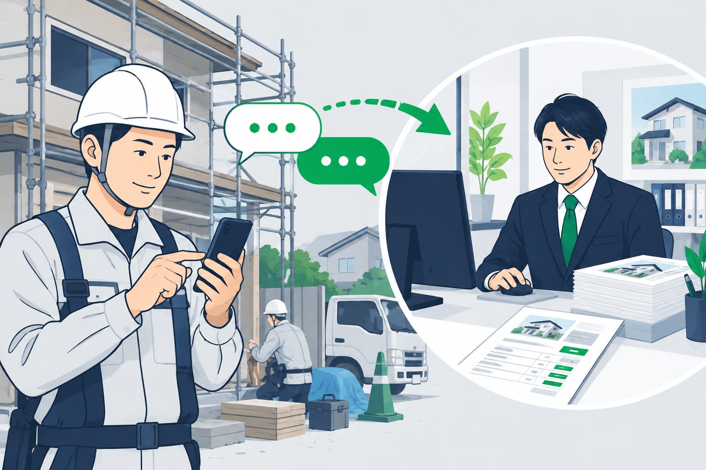
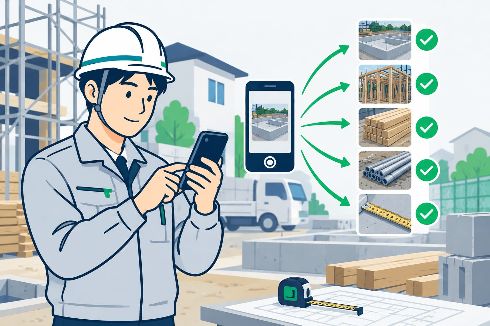

LINE見積書AIシステムで建設業の下書きを作るかんたん手順
現場で頼まれた追加工事や補修の見積を、電話の記憶とLINE写真だけで起こすのは大変です。この記事では、現場トークからAIが項目をそろえ、足りない内容を聞き返し、事務所へ下書きを渡す流れを具体的に説明します。小規模な建設会社でも始めやすい形です。

この記事の要点
- 現場LINEから見積作成を開始
- AIが不足項目を聞き返す
- 下書きと確認リストを作成
- 最終確認は必ず人が行う
- 助成金・補助金も確認可能
LINEのトークから見積書の下書きを始める

建設業の見積は、現場で始まることが多いです。追加工事を頼まれた。補修の写真を送られた。元請けから急ぎで金額を聞かれた。こうした話が、電話やLINEに分かれて残ります。
事務所側は、あとで内容を集め直します。現場名、作業範囲、数量、希望日を聞き返します。写真はあるのに、どの場所か分からないこともあります。
LINEから見積作成を始めるAIシステムは、この入口を変えます。現場がいつものLINEに依頼内容を送ると、AIが見積に必要な形へ整理します。いきなり完成版を出すのではなく、まず下書きを作る考え方です。
最終の金額や提出内容は、人が確認します。AIは、聞き漏れを減らし、事務所が作業に入れる状態まで整える役割です。
現場から送る内容は5つに絞る

現場に細かい入力を求めると続きません。最初は、送る内容を5つに絞るのが現実的です。長い文章でなくても構いません。
- 現場名または住所
- 依頼された工事内容
- 数量、寸法、範囲
- 希望日や提出期限
- 写真、図面、注意点
たとえば、LINEには次のように送ります。
「〇〇ビル3階、天井ボード補修。だいたい2枚分。写真3枚送ります。今週中に概算が必要です」
これだけでは正式な見積書には足りません。ただ、AIシステムが整理する入口としては十分な場合があります。AIは文章と写真の流れをまとめ、見積に必要な項目へ分けます。
大切なのは、現場が迷わないことです。現場では手が止められません。LINEで普段どおり送れる形にすると、依頼が事務所へ早く届きます。
AIが不足項目を聞き返して依頼を整える
見積依頼で困るのは、不足項目があとから見つかることです。数量がない。材質が分からない。搬入条件が書かれていない。事務所は、そのたびに現場へ確認します。
AIシステムを入れると、聞き返しを自動で出せます。たとえば、天井補修の依頼に対して、次のような確認が返ります。
- 補修箇所は何か所ですか
- 天井高さはおおよそ何メートルですか
- 下地の交換は必要そうですか
- 作業時間の指定はありますか
- 駐車や搬入の制限はありますか
現場は、分かる範囲でLINEに返します。分からない項目は「未確認」として残せます。無理に全部を埋める必要はありません。
ここで大事なのは、AIが答えを決めつけないことです。足りない情報を見つけ、確認事項として出します。事務所は、何が分かっていて、何が未確認かを見ながら進められます。
見積書の下書きと確認リストを事務所に渡す
項目がそろうと、AIは見積書の下書きを作ります。下書きとは、提出前に事務所が確認する材料です。正式な見積書としてそのまま送るものではありません。
下書きには、次のような内容を入れます。
| 項目 | 下書きに入る内容 |
|---|---|
| 件名 | 工事名や現場名 |
| 作業内容 | 補修、撤去、取付など |
| 数量 | 平米、個数、人工など |
| 単価欄 | 入力待ち、または登録単価の候補 |
| 備考 | 条件、未確認事項、写真番号 |
あわせて、確認リストも作れます。現調が必要か。材料の指定があるか。夜間作業か。産廃処分があるか。こうした抜けやすい点を、一覧で見られるようにします。
単価や値引き、提出先ごとの表現は会社ごとに違います。そのため、AIが作るのはあくまでたたき台です。事務所が確認し、必要に応じて見積書式へ反映します。
DX職人ならいつものLINEで確認できる
DX職人のAIシステムは、いつものLINEのトークから使える形を大切にしています。新しいアプリを開く前に、まず現場が送れることが重要だからです。
たとえば、現場がLINEに写真と短い説明を送ります。AIが不足項目を返します。現場が追加で答えます。事務所には、整理された依頼内容と見積書の下書きが届きます。
現場側は、難しい画面を覚える必要がありません。事務所側は、バラバラのメッセージを探す時間を減らせます。小さな会社ほど、この差が毎日の負担に効いてきます。
AIシステムを選ぶときの確認点は、AIシステムの選び方 建設業で失敗しない確認点とLINE条件でも整理しています。見積だけでなく、日報や写真整理にも広げたい場合は、入口の条件を先に見ると進めやすくなります。
自動作成で失敗しないための注意点
建設業の見積書は、現場条件で金額が変わります。AIで自動作成に近づけても、人の確認は外せません。特に、単価、数量、作業条件、提出先名は必ず確認します。
会社ごとの呼び方もそろえておくと便利です。たとえば「天井ボード補修」「ジプトーン張替」「軽天下地」など、同じ工事を違う言い方で送ると整理しにくくなります。よく使う工事項目だけでも、社内の一覧を作っておくと下書きが安定します。
個人情報や契約金額など、扱いに注意が必要な情報もあります。AIに入れる情報は、会社の方針を決めてから使うと安心です。提出前の見積書、請求先情報、写真の写り込みは特に確認します。
すでに届いたメモや紙から作り直す場面は、見積書の打ち直しを減らす、AIの使いどころで説明しています。この記事の方法は、さらに前の段階である現場のLINE依頼から整える使い方です。
助成金・補助金で導入費を確認する
LINEから使えるAIシステムは、導入費が気になるところです。建設業でも、IT導入補助金などを使える場合があります。対象になるかどうかは、年度や公募内容で変わります。
2026年11月9日時点でも、補助金や助成金は制度ごとに扱いが違います。金額、対象経費、申請の流れは最新の公募要領で確認が必要です。制度ごとに要件があるので、ご相談の際に確認します。
注意したいのは、先に契約や発注を進めないことです。制度によっては、申請前の契約が対象外になる場合があります。使いたい制度があるなら、見積相談の段階で伝えておくと安全です。
建設業でLINEのAIシステム導入を考える流れは、IT導入補助金で建設業がLINEのAIシステムを導入する流れでも紹介しています。費用感を知りたい場合は、システム内容と補助金の確認を同時に進めるのがおすすめです。
小さく始めるなら1つの工事種別から
最初から全工事の見積をAIで整えようとすると大変です。おすすめは、よく出る工事種別を1つ選ぶことです。たとえば、補修工事、原状回復、設備交換、外構の追加工事などです。
始め方はシンプルです。
- よくある見積依頼を10件ほど集める
- LINEで送る5項目を決める
- AIの聞き返し項目を決める
- 下書きの形を事務所で確認する
- 使いながら項目を直す
この流れなら、現場にも事務所にも大きな負担をかけにくいです。まずは「依頼内容がそろって事務所に届く」状態を目指します。
LINEから見積書の下書きを作るAIシステムは、完成した見積書を魔法のように出す道具ではありません。現場のトークを、事務所が使える材料に変える道具です。ここが整うだけで、聞き返しと打ち直しはかなり減らしやすくなります。
よくある質問
LINEだけで見積書を自動作成できますか？
LINEの内容から見積書の下書きまでは作れます。ただし、単価、数量、条件、提出先名は人の確認が必要です。正式な見積書は確認後に出す形がおすすめです。
現場から何を送れば見積の下書きになりますか？
現場名、工事内容、数量や寸法、希望日、写真や注意点を送ると整理しやすくなります。不足があればAIが聞き返し、未確認の項目も一覧にできます。
写真だけでもAIで見積依頼を作れますか？
写真だけでは場所や範囲が分からないことがあります。写真に加えて、どこの何を見積もるのかを短く添えると、AIが下書きにまとめやすくなります。
建設業のAIシステム導入に助成金は使えますか？
IT導入補助金などを使える場合があります。ただし、対象経費や手続きは年度で変わります。最新の公募要領を確認し、契約前に相談することが大切です。
今使っている見積書式に合わせられますか？
会社の見積書式に合わせて、下書き項目を寄せられる場合があります。まずは現在の書式と、よくある工事項目を確認し、どこまで自動化するか決めます。